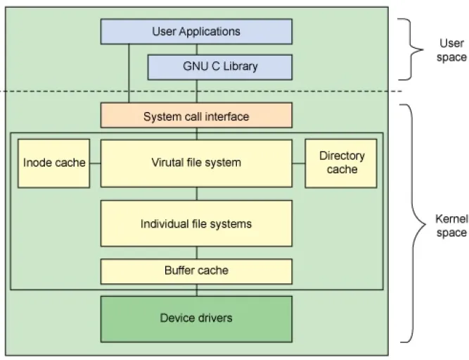

Agenda
TODO: Agenda
Latency and Throughput

- Latency = Time until the first drop of water arrives
- Throughput = Current volume of water per time
- Bandwidth = Maximum throughput
Examples:
- SSDs: Low latency, high throughput.
- HDDs: Medium latency, high throughput.
- Network: Often high latency, any kind of throughput.
- USB Stick over carrier pigeon: High latency, high throughput.
Last point was even standardized (jokingly): https://en.wikipedia.org/wiki/IP_over_Avian_Carriers
Hardware: HDDs

- Rotational, stacked disks.
- Reading head needs to seek to the right position.
- Mechanical system, bad at low/high temperature or moving systems.
- Dying technology, but battled tested & still widely used.
Big advantage: You could debug issues with too many seeks by audio!
Also: did you ever try to shake your old laptop with a hdd while reading?
Hardware: SDDs

- Flash technology
- No expensive seek necessary.
- Limited number of write cycles.
- Becoming cheaper and better every year.
Write software for SSDs. There were some crazy tricks like FIEMAP to make applications re-order their reads in the order of how they are placed on disk. (Huge speedup on HDD, small speedup on SSD)
Hardware: Write amplification

Source: http://databasearchitects.blogspot.com/2021/06/what-every-programmer-should-know-about.html?m=1
SSDs are divided into blocks (seveal MB), which are divided into pages (often 4K). Pages cannot be erased, only blocks can be. Updates of a pages are written to new blocks. If space runs out, old blocks with many stale pages are erased and can be re-used. The number of physical writes is therefore higher than the number of logical writes. The more space is used, the higher the write amplication factor though.
What we can do about it: Buy bigger SSDs than you need. Also avoid rewriting pages if possible. Secret: SSD have some spare space to keep working they don't tell you about.
Also enable TRIM support if your OS did not yet, but nowadways always enabled. This makes it possible for the OS to tell the SSD additional blocks that are not needed anymore.
Virtual File System
Below device drivers: hardware controllers - beyond this talk. They can also re-order writes and are mostly concerned with durability, i.e. a SSD controller will try to distribute the blocks he used to make sure they have a similar amount of write cycles.
How do syscalls work?
Only method of userspace to talk to kernel. How to call is ISA specific.
movl $4, %eax ; use the `write` system call (4) movl $1, %ebx ; write to stdout (1) movl "Hello World!\n", %ecx ; use string "Hello World" movl $12, %edx ; write 12 characters syscall ; make system call via special instruction ; The return code is in the eax register.
The syscall instruction performs a context switch.
This means the current state of the process (i.e. the state of all registers in the CPU) is saved away, so it can be restored later. Once done, the kernel sets the register to its needs, does whatever is required to serve the system call. When finished, the process state is restored and execution continues.
Context switches also happen when you're not calling any syscalls. Simply when the scheduler decide this process is done with execution.
Typical syscalls
- IO: read, write, close
- Files: stat, chmod, mkdir
- Memory: sbrk, mmap
- Processes: fork, kill, wait
- Network: listen, connect, epoll
- Mysterious: ioctl, chroot, mount
Luckily for us, glibc and Go provide us nice names and interfaces to make those system calls. They usually provide thin wrappers that also do some basic error checking. Watch out: fread is doing buffering in userspace!
Can anyone think of another syscall not in the list above? exit! chdir, mkdir, chmod, ...
Syscalls are expensive
$ dd if=/dev/urandom of=./big-file bs=1M count=1024 $ dd if=big-file of=/dev/null bs=1b 4,07281 s, 264 MB/s $ dd if=big-file of=/dev/null bs=32b 0,255229 s, 4,2 GB/s $ dd if=big-file of=/dev/null bs=1024b 0,136717 s, 7,9 GB/s $ dd if=big-file of=/dev/null bs=32M 0,206027 s, 5,2 GB/s
Good buffer sizes: 1K - 32k
Each syscall needs to store away the state of all registers in the CPU and restore it after it finished. This is called "context switch".
Many syscalls vs a few big ones.
Try to reduce the number of syscalls, but too big buffers hurt too.
Making syscalls visible
$ strace ls /tmp
Insanely useful tool to debug hanging tools or tools that crash without a proper error message.
Usually the last syscall they do give a hint.
Terminology: inode?
The unique id of a file. Several paths can have the same Inode.
$ echo hello-world > file $ stat --format '%i' file 1883 $ ln file hardlink $ stat --format '%i' hardlink 1883
There's a theoretical maximum of inodes per filesystem. Most filesystems prefer bigger files, since every file lookup has to lookup the right one in a big set of inodes.
Page cache
- All I/O access is cached using the page cache (dir + inode)
- Free pages are used to store recently accessed file contents.
- Performance impact can be huge.
Clearing the cache
For I/O benchmarks always clear all caches:
# 1: Clear page cache only. # 2: Clear inodes/direntries cache. # 3: Clear both. sync; echo 3 | sudo tee /proc/sys/vm/drop_caches
Example: code/io_cache
Caveat: Writes are buffered!
Make sure all file data is written to the hardware:
sync
fsync(fd)
That's why we have the sync command before the drop_cache command.
Alternative to fsync()
# Move is atomic!
$ cp /src/bigfile /dst/bigfile.tmp
$ mv /dst/bigfile.tmp /dst/bigfileThis only works obviously if you're not constantly updating the file, i.e. for files that are written just once.
Typical read I/O
char buf[1024]; int fd = open("/some/path", O_CREAT|O_RDONLY|O_TRUNC); size_t bytes_read = 0; while((bytes_read = read(fd, buf, sizeof(buf))) > 0) { /* do something with buf[:bytes_read] */ } close(fd);
Typical write I/O
char buf[1024]; size_t bytes_in_buf = 0; int fd = open("/some/path", O_CREAT|O_WRONLY|O_TRUNC); do { /* fill buf somehow with data you'd like to write, * set bytes_in_buf accordingly. */ } while(write(fd, buf, bytes_in_buf) >= 0) fsync(fd); close(fd);
There is a bug here:
write() returns the number of written bytes. It might be less than bytes_in_buf and this is not counted as an error. The write call might have simply been interrupted and we expect that it is called another time with the remaining data.
Also: Does the application that the data is immediately for read()? Answer: nope. You have to use fsync()
Also please note: There is some error handling missing here.
Fixed write version
/* ... */ char *buf_ptr = buf; while(bytes_in_buf > 0) { size_t written = write(fd, buf_ptr, bytes_in_buf); bytes_in_buf -= written; buf_ptr += written; if(errno != 0) { return; } } /* ... */
Many write utils actually handle this for you. But io.Writer() behaves the same! Depending on the underlying file type and system this might be rare but is a real thing.
What about fread()?
A weird accident in history.
Usecases:
- You need to read byte by byte.
- You need to unread some bytes frequently.
- You need to read easily line by line.
Otherwise: Do not use.
Userspace buffered functions. No real advantage, but limiting and confusing API. Has some extra features like printf-style formatting.
In Go the normal read/write is using the syscall directly, bufio is roughly equivalent to f{read,write} etc. fsync() is a sycasll, not part of that.
Detour: Filesystems
Performance depends a little on filesystem:
- ext2/3/4: good, stable & fast choice.
- fat8/16/32: simple, but legacy, do not use.
- NTFS: slow and only for compatibility.
- XFS: good with big files.
- btrfs: feature-rich, can do CoW & snapshots.
- ZFS: highly scalable and very complex.
- sshfs: remote access over FUSE
Actual implementation of read/write/etc. for a single filesystem like FAT, ext4, btrfs. There are different ways to layout and maintain data on disk, depending on your use case.
Syscalls all work the same, but some filesystems have better performance regarding writes/reads/syncs or are more targeted at large files or many files.
Most differences are admin related (i.e. integrity, backups, snapshots etc.)
Detour: Fragmentation
The problem that file content is distributed over many blocks.
Windows sucks but this term stuck in our heads. ext4 does not require fragmentation.
Detour: FUSE

A note on seeking
- Rotational disks have only one reading head.
- They re-order read requests
- This can increase latency!
- SSDs use
I/O improving performance
- Avoid I/O.
- Use a sane buffer size.
- Use append only data for writing.
- Batch writes as they evict caches.
- Prefer few big files over many small files.
- Avoid directories with high amount of files (git)
- For modifying big files use mmap.
- Buy faster hardware.
I/O improving performance #2
- Use a different I/O scheduler (none).
- Use a different filesystem (tmpfs)
- Leverage the page cache and trust the OS
- Use zero-copy techniques: sendfile, splice
- Not crazy: Use DMA if possible (hardware dependent)
- Slightly crazy: fadvise() if you need prefetch
- Maybe crazy: use O_DIRECT
- Likely crazy: skip fsync()
- Definitely crazy: FIEMAP
I/O scheduler
Re-orders read and write requests for performance.
- none: Does no reordering.
- bfq: Complex, designed for desktops.
- mq-deadline, kyber: Simpler, good allround schedulers.
In the age of SSDs we can use dumber schedulers. In the age of HDDs schedulers were vital.
ionice
# Default level is 4. Lower is higher. $ ionice -c 2 -n 0 <some-pid>
Well, you can probably guess what it does.
Why is cp faster?
package main import( "os" "io" ) func main() { src, _ := os.Open(os.Args[1]) dst, _ := os.Create(os.Args[2]) io.Copy(dst, src) }
cp is not faster because it copies data faster, but because it avoids copies to user space by using specialized calls like:
- ioctl(5, BTRFS_IOC_CLONE or FICLONE, 4) = 0 (on btrfs)
- copy_file_range() - performs in-kernel copy, sometimes even using DMA
Find out using strace cp src dst. If no trick is possible it falls back to normal buffered read/write.
Reduce number of copies
- Do not copy buffers in your program too often
- You can use readv to splice existing buffers to one.
- Use hardlinks if possible
- Use CoW reflinks if possible.
- sendfile() to copy files to Network.
- copy_file_range() to copy between files.